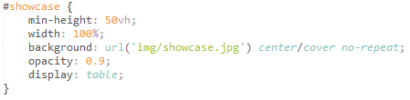
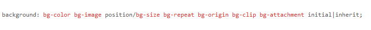

Allows authors to specify the values of several properties with a single property.
Example:
background property can already define the following properties:
background-color
background-image
background-positiont
background-repeat

background property syntax:

other examples of shorthand properties: margin, font, padding, and border.
Vendor specific extensions (a.k.a., vendor prefixes)
Used by browser vendors as a prefix for the names of experimental or non-standard
CSS properties; lately, vendors are moving away from vendor prefixes in favor of
user-controlled flags/preferences.
It may begin with a dash '-' or an underscore '_'
format:
'-' + vendor identifier + '-' + meaningful name
'_' + vendor identifier + '-' + meaningful name
Example:
-webkit- (Chrome, Safari, newer versions of Opera, any WebKit based browser)
Property names prefixed with a double dash '--' represents a value that can be
reused throughout the document using the var() function.
syntax:
var(custom property);
var(custom property, alternative value);
Example:
Values
Value processing
Stages in processing values:
Declared values applied to an element are collected. There can be 0 or more declared values per element.
Cascading yields the cascaded value. There can be at most 1 cascaded value per property per element.
Defaulting yields the specified value. Every element must have 1 specified value per property.
Resolving value dependecies yields the computed value. Every element must have 1
computed value per property.
Formatting the document yields the used value. An element can only have a used value per property if the property applies to the element.
Used value is transformed into the actual value. The used value may or may not have an actual value per property per element.
* The actual value is the final value of the property.
Declared Values
Value that is declared to a property of an element.
Values declared are collected and undergoes Cascading.
*Cascading
process done by the cascade wherein it sorts the unordered list of Declared values according to their precedence the provides a single cascaded value
Cascaded Values
Values that represent the result of the cascade - the declared value that won the cascade.
Specified Values
It is the result of the cascaded value undorgoing the defaulting process.
*Defaulting
process done when the cascade does not return a value. It finds the specified value through the default values of the properties. Properties that inherit from their parent element has a default value similar to their parent element while other properties that are not inherited properties take their default value from their initial value.
From defaulting process, it uses the keywords 'intial' and 'inherit'.
Computed Values
It is the result of resolving the specified value.
Its value is obtained by transferring the value from the parent to the child through inheritance.
Used Values
It is the result of taking the computed value and completing remaining processes to be able to use the value in layouting the document.
Actual Values
It is the Used Value that undergoes adjustments to make the value usable to the user's environment.
Value Types
Keywords
CSS-wide keywords
initial
represents the value specified as the property’s initial value.
inherit
represents the computed value of the property on the element’s parent.
unset
acts as either inherit or initial, depending on whether the property is inherited or not.
Property-specific keywords
numbers
Integers or reals in (scientific) decimal notation.
dimensions
Length, angle, time, frequency, resolution
Length Units:
font-relative: em, ex, ch, rem
view-port percentage: vw, vh, vmin, vmax
absolute: cm, mm, in, pt, pc, px
Angle Units:
deg, grad, rad, turn
used in some gradient and transform functions
Duration (or time) Units:
s, ms
used in animation, transition and related properties
Frequency Units
Hz, KHz
initially introduced in CSS 2 for the (obsoleted) aural medie type
it was reintroduced in CSS 3 but is currently unused
Resolution Units
dpi, dpcm, dppx
used in media queries
Percentages
Number with a percent '%' suffix.
Calculated as a percentage of some value (usually taken from the parent element).
URLs and URIs
url() function with an absolute or relative (to the stylesheet) URL parameter.
It denotes a pointer to a resource such as image or a font.
Colors
color keywords
ex: red, blue, blackt
RGB hexadecimal notation
ex: #ffffff
RGB functions
ex: rgb(255,0,0)
HSL functions
Currentcolor, transparent
Strings
determined by single quotes (') or double quotes (")